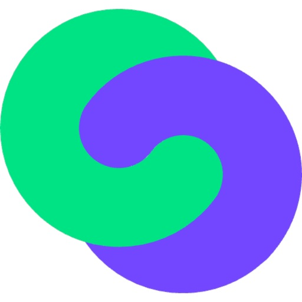

Automated Document Generation Software Integration
Elinext turned a prototype into a stable platform, improved document workflow ownership, and formalized QA for earlier issue detection.
Read the case study
Twind accessPrepared for Sofia Braun
Sofia, this brief looks at CTAIMA's current engineering moment: Documenta hiring, Twind's access-control work, and stable contractor compliance workflows as the platform expands.
We saw CTAIMA hiring a Documenta Team Lead in Tarragona, plus Conversation Designer and Systems Engineer roles. That points to more work around document operations, support flows, and platform reliability.
Our read
The hiring signal says CTAIMA is growing the teams behind Documenta, support dialogue, and systems work. That matches Twind's shift from CAE software into one shared platform for document validation, access control, permits, AI, APIs, and contractor support. The hard part is not only building features. It is keeping every access decision, document status, and client integration clear when many markets and clients use different rules. If that layer slows down, field access gets blocked and support load rises. Recent Twind mobile notes also show active work on offline access, site hierarchy, and sync behavior.
Where we'd start
An older Twind Android review reports a blank screen at company selection. Add this state to release gates for login, offline lookup, blocked access, and sync retry.
Map Documenta's eight-step service flow to product telemetry. Show where documents, signatures, client platforms, or contractor records create the most rework.
What we'd do
Use a dedicated squad under CTAIMA's Product Owner and Sofia's engineering leads. The first pilot should reduce release risk before it adds more roadmap load.
Trace Documenta and Twind access states across login, company selection, document checks, offline capture, and sync retry.
Stabilize the mobile gate with automated smoke tests for blocked access, temporary authorizations, site hierarchy, and blank-state recovery.
Harden APIs and data flows so client systems, Power BI exports, and contractor records stay clear after each release.
Ship with weekly demos, Spanish working hours overlap, and a clean handover into Sofia's team standards.
Who is Elinext
Elinext is a full-cycle software development company founded in 1997, with about 700 in-house specialists and no freelancers. We build web, mobile, backend, QA, AI/ML, and DevOps teams for clients across Europe and North America. For CTAIMA, the fit is regulated B2B software: ISO 27001, ISO 9001, Java, React, Angular, QA, and secure delivery habits.
That depth would let Sofia add capacity without lowering the bar for Documenta and Twind.
Proof
Elinext turned a prototype into a stable platform, improved document workflow ownership, and formalized QA for earlier issue detection.
Read the case study
A dedicated Java and DevOps team built a continuously compliant tracking system with reporting and faster issue follow-up.
Read the case study